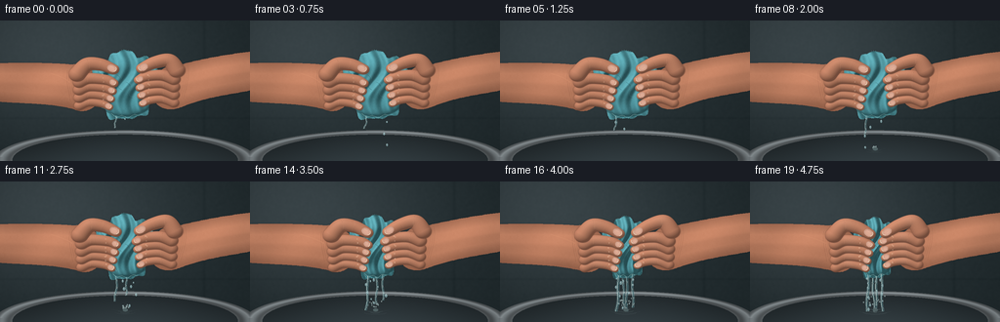
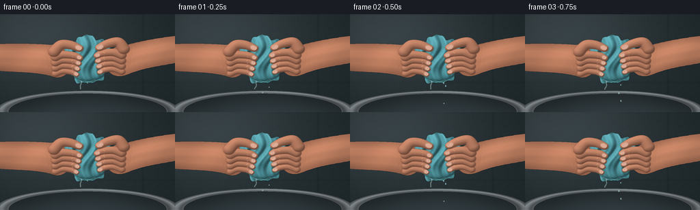

CODING AGENTS AS PIXEL WORLD MODELS
traex/GPT-6.1-Sol · phygen_015
点击播放 · 原生 RGB 像素
逐轮保存的候选
回放视频、检查图与代码变化。
每份候选均可单独播放。实际图片检查记录在下方工具轨迹中。
候选 01播放与检查图
点击播放 · 原生 RGB 像素


展开代码变化
--- 上一保存版本
+++ 本次保存版本
@@ -0,0 +1,361 @@
+"""Procedural RGB macro shot: a wet terry cloth squeezed over a steel basin.
+Only analytic geometry, numpy and Pillow are used to generate imagery.
+"""
+from pathlib import Path
+import math
+import numpy as np
+from PIL import Image, ImageDraw, ImageFilter
+from scipy.ndimage import distance_transform_edt, gaussian_filter
+from artifact_io import save
+
+ROOT = Path(__file__).resolve().parent
+S = 3
+W,H = 256*S,144*S
+Y,X = np.mgrid[0:H,0:W].astype(np.float32)
+x,y = X/S,Y/S
+rng = np.random.default_rng(2901)
+noise = rng.normal(0,1,(H,W)).astype(np.float32)
+softnoise = gaussian_filter(noise, 2.7)
+
+
+def bezier(p0,p1,p2,p3,n=80):
+ t=np.linspace(0,1,n)[:,None]
+ return ((1-t)**3*np.array(p0)+3*(1-t)**2*t*np.array(p1)+3*(1-t)*t*t*np.array(p2)+t**3*np.array(p3))
+
+def mask_polygon(points):
+ m=Image.new('L',(W,H)); d=ImageDraw.Draw(m)
+ d.polygon([(round(a*S),round(b*S)) for a,b in points],fill=255)
+ return np.asarray(m,dtype=np.float32)/255
+
+def over(im,col,alpha):
+ if np.ndim(alpha)==2: alpha=alpha[...,None]
+ return im*(1-alpha)+np.asarray(col)*alpha
+
+def overlay(im, fn):
+ layer=Image.new('RGBA',(W,H)); d=ImageDraw.Draw(layer)
+ fn(d)
+ a=np.asarray(layer).astype(np.float32)
+ return over(im,a[:,:,:3],a[:,:,3]/255)
+
+def line(d,pts,fill,width):
+ d.line([(int(a*S),int(b*S)) for a,b in pts],fill=fill,width=max(1,round(width*S)),joint='curve')
+
+def ell(d,box,fill,outline=None,width=1):
+ d.ellipse(tuple(int(v*S) for v in box),fill=fill,outline=outline,width=max(1,round(width*S)))
+
+# Defocused stone wall, with a soft warm light from the upper-left.
+def background():
+ light=np.exp(-((x-46)/135)**2-((y-22)/90)**2)
+ base=np.stack([32+27*light+0*x,42+28*light+0*x,45+29*light+0*x],axis=-1)
+ # Very soft tile seams; not a graphic grid.
+ seam=np.exp(-((x-209)/1.6)**2)+.8*np.exp(-((y-100)/1.2)**2)
+ base-=seam[...,None]*3.7
+ base+=softnoise[...,None]*4
+ # stainless rim, perspective ellipse at bottom of the shot
+ re=np.sqrt(((x-128)/127)**2+((y-143)/29)**2)
+ rim=(re<1.06)&(re>.91)
+ metal=104+23*np.sin(re*52)+17*(1-y/170)+7*np.cos(x/24)
+ base=np.where(rim[...,None],np.stack([metal*.94,metal,metal*1.025],axis=-1),base)
+ inner=re<.91
+ steel=35+22*np.clip((y-117)/29,0,1)+9*np.cos((x-128)/55)
+ base=np.where(inner[...,None],np.stack([steel*.82,steel*.99,steel*1.06],axis=-1),base)
+ # Upper lip has a bright specular edge.
+ edge=np.exp(-((re-1.01)/.012)**2)*(y<140)
+ base+=edge[...,None]*19
+ return base
+
+BG=background()
+
+# Soft flesh form shader with edge relief and natural color variation.
+def skin_blob(im,points,kind=0,pressure=0):
+ m=mask_polygon(points)
+ dist=distance_transform_edt(m>.5)/S
+ relief=np.minimum(dist/11,1)
+ dy,dx=np.gradient(gaussian_filter(dist,S*1.3))
+ nx=-dx*.5; ny=-dy*.5
+ shade=.81+.19*relief-.13*nx-.18*ny
+ shade+=.035*np.sin(x*.08+y*.06)
+ flesh=np.stack([190+9*np.sin(y*.038),126+7*np.sin(y*.038),96+6*np.sin(y*.038)],axis=-1)
+ flesh*=shade[...,None]
+ flesh+=softnoise[...,None]*3+noise[...,None]*.8
+ # subtle warm translucency at outer contours
+ flesh[:,:,0]+=6*np.exp(-dist/1.9)
+ shadow=gaussian_filter(m,1.1*S)
+ im=over(im,[18,19,18],shadow*.22)
+ return over(im,np.clip(flesh,0,255),m)
+
+# Continuous cylinder/sphere forms for curved fingers. Returns surface silhouette.
+def finger(im,points,radii,pressure,creases=True,nail=False,thumb=False):
+ p=np.array(points,dtype=float)
+ # smooth Catmull-Rom polyline between control points
+ pp=np.vstack([p[0],p,p[-1]])
+ centers=[]; rr=[]
+ for k in range(len(p)-1):
+ a,b,c,d=pp[k:k+4]
+ for t in np.linspace(0,1,16,endpoint=False):
+ v=.5*((2*b)+(-a+c)*t+(2*a-5*b+4*c-d)*t*t+(-a+3*b-3*c+d)*t**3)
+ centers.append(v); rr.append(radii[k]*(1-t)+radii[k+1]*t)
+ centers.append(p[-1]);rr.append(radii[-1])
+ # Nearest axis, using local image coordinates only (efficient full-array math).
+ xmin=max(0,int((min(q[0] for q in centers)-max(rr)-2)*S)); xmax=min(W,int((max(q[0] for q in centers)+max(rr)+2)*S)+1)
+ ymin=max(0,int((min(q[1] for q in centers)-max(rr)-2)*S)); ymax=min(H,int((max(q[1] for q in centers)+max(rr)+2)*S)+1)
+ if xmax<=xmin or ymax<=ymin:return im
+ xx=x[ymin:ymax,xmin:xmax]; yy=y[ymin:ymax,xmin:xmax]
+ qbest=np.full(xx.shape,10.); bx=np.zeros(xx.shape);by=np.zeros(xx.shape);br=np.ones(xx.shape)
+ along=np.zeros(xx.shape)
+ for k,(pos,r) in enumerate(zip(centers,rr)):
+ q=((xx-pos[0])/r)**2+((yy-pos[1])/(r*.86))**2
+ take=q<qbest
+ qbest=np.where(take,q,qbest);bx=np.where(take,pos[0],bx);by=np.where(take,pos[1],by);br=np.where(take,r,br);along=np.where(take,k/(len(rr)-1),along)
+ alpha=np.clip((1-qbest)*S*2.7,0,1)
+ z=np.sqrt(np.clip(1-qbest,0,1))
+ nx=(xx-bx)/br;ny=(yy-by)/(br*.86)
+ diff=np.clip(-.38*nx-.58*ny+.71*z,0,1)
+ shade=.54+.46*diff
+ edge=(1-z)
+ c=np.stack([207+6*along,140+4*along,109+3*along],axis=-1)
+ c*=shade[...,None]
+ c[:,:,0]+=7*edge
+ # Pressure makes contact zones/knuckles paler, without changing identity.
+ pale=pressure*7*np.exp(-((along-.40)/.15)**2)*z
+ c+=pale[...,None]*np.array([.9,1.0,1.0])
+ spec=(np.clip(-.23*nx-.42*ny+.87*z,0,1)**25)*5.5
+ c+=spec[...,None]+noise[ymin:ymax,xmin:xmax,None]*.7
+ patch=im[ymin:ymax,xmin:xmax]
+ shadow=gaussian_filter(alpha,.75*S)
+ patch=over(patch,[37,26,21],shadow*.33)
+ im[ymin:ymax,xmin:xmax]=over(patch,np.clip(c,0,255),alpha)
+ # flexion creases follow the curved finger; a dark line with a displaced light lip.
+ if creases:
+ def detail(d):
+ for f in ([.39,.65] if thumb else [.31,.63,.72]):
+ i=int(f*(len(centers)-1)); cen=np.array(centers[i]); tang=np.array(centers[min(i+2,len(centers)-1)])-np.array(centers[max(0,i-2)])
+ tang=tang/(np.linalg.norm(tang)+1e-8); norm=np.array([-tang[1],tang[0]])
+ r=rr[i]
+ pts=[cen+norm*r*v*.64+tang*(.45-1.0*v*v) for v in np.linspace(-1,1,18)]
+ line(d,pts,(106,63,46,71),.34)
+ line(d,[q+np.array([0,-.45]) for q in pts],(247,180,142,42),.28)
+ im=overlay(im,detail)
+ if nail:
+ tip=p[-1]; tangent=p[-1]-p[-2]; tangent/=np.linalg.norm(tangent)
+ normal=np.array([-tangent[1],tangent[0]])
+ center=tip-tangent*(1.7 if thumb else 1.3)+np.array([0,-.55])
+ length=4.8 if thumb else 3.2; width=3.5 if thumb else 2.7
+ pts=[center+tangent*length*math.cos(a)+normal*width*math.sin(a) for a in np.linspace(0,2*math.pi,60)]
+ nm=mask_polygon(pts)
+ # convex translucent nail, warm pink and a thin bright outer keratin edge
+ nd=distance_transform_edt(nm>.5)/S
+ value= .89+.11*np.clip(nd/2,0,1)
+ nailcol=np.stack([224*value,173*value,151*value],-1)
+ im=over(im,nailcol,nm*.97)
+ def ndetail(d):
+ arc=[center+tangent*length*math.cos(a)+normal*width*math.sin(a) for a in np.linspace(-.8,.8,20)]
+ line(d,arc,(240,218,192,180),.5)
+ gl=[center-tangent*2+normal*-1.2,center+tangent*1+normal*-1.2]
+ line(d,gl,(252,219,193,116),.45)
+ im=overlay(im,ndetail)
+ return im
+
+# A deforming, bunched terry cloth with persistent material-coordinate weave.
+def cloth(im,c,t):
+ cx=128+.4*math.sin(t*2); cy=65+2.0*c
+ a=37-13*c; b=33-4*c
+ theta=np.linspace(0,2*np.pi,220,endpoint=False)
+ radial=1+.065*np.sin(theta*7+.4)+.038*np.sin(theta*13+1.5)+.025*np.cos(theta*19)
+ # The lower edge has a weighted, asymmetric small flap.
+ px=cx+a*np.cos(theta)*radial
+ py=cy+b*np.sin(theta)*radial+np.maximum(np.sin(theta),0)**9*4
+ points=list(zip(px,py)); m=mask_polygon(points)
+ u=(x-cx)/a; v=(y-cy)/b
+ # Explicit rounded folds, puckering densely under the two grips.
+ phase=12*u+2.6*np.sin(v*3)+1.3*v+1.9*c*v
+ folds=np.sin(phase)*2.5+np.sin(phase*1.87+.7)*1.1
+ folds+=2.5*np.sin(v*8+u*2)*(0.3+.6*np.abs(u))
+ envelope=np.sqrt(np.clip(1-u*u-v*v,0,1))
+ z=9*envelope+folds*(.85+.9*c)
+ gy,gx=np.gradient(gaussian_filter(z,S*.6))
+ nx=-gx*S;ny=-gy*S;nz=np.ones_like(nx)
+ norm=np.sqrt(nx*nx+ny*ny+nz*nz)
+ lam=np.clip((-.48*nx-.57*ny+.76)/norm,0,1)
+ depth=(np.sin(phase)+1)/2
+ shade=.42+.58*lam
+ shade*=.87+.13*depth
+ # soft terry cloth: blue-green yarn under warm daylight
+ base=np.stack([49+shade*42,107+shade*58,114+shade*61],-1)
+ base*=shade[...,None]*.8+.3
+ # Orthogonal interlacing threads in cloth coordinates and small loop pile.
+ uu=(u*a*1.14+.8*np.sin(phase));vv=v*b+folds*.4
+ warp=np.cos(uu*np.pi*2.5);weft=np.cos(vv*np.pi*3.0)
+ weave=(warp+weft)*1.65+.8*warp*weft
+ fibers=noise*2.3+softnoise*5.2+weave
+ base+=fibers[...,None]
+ base+=np.clip(lam,0,1)[...,None]**12*4
+ shadow=gaussian_filter(m,S*1.6)
+ im=over(im,[19,29,28],shadow*.26)
+ im=over(im,np.clip(base,0,255),m)
+ # Few sewn folded ridges keep the towel a legible textile object.
+ def clothdetail(d):
+ for j in range(6):
+ yy=cy-22+j*8
+ xx=cx+(-.70+j*.28)*a
+ pts=bezier((xx-4,yy-4),(xx+8,yy+3),(xx-9,yy+8),(xx+2,yy+12),35)
+ # clipped later to avoid seam escaping silhouette
+ line(d,pts,(28,73,79,59),.55)
+ line(d,pts+np.array([.7,-.5]),(154,194,193,39),.45)
+ lay=Image.new('RGBA',(W,H));clothdetail(ImageDraw.Draw(lay));arr=np.asarray(lay).astype(np.float32)
+ im=over(im,arr[:,:,:3],arr[:,:,3]/255*m)
+ # short edge fuzz following each material coordinate
+ def fuzz(d):
+ for k in range(0,len(theta),2):
+ q=np.array([px[k],py[k]]); direction=np.array([math.cos(theta[k]),math.sin(theta[k])])
+ line(d,[q,q+direction*(.3+.23*math.sin(k*6.1))],(147,187,188,100),.22)
+ # a folded lower hem, with nearly microscopic stitch dashes
+ pts=[]
+ for q in np.linspace(-.38,.4,40):
+ xx=cx+q*a; yy=cy+b*math.sqrt(1-q*q)+1.5+1.2*math.sin(q*19)
+ pts.append((xx,yy))
+ line(d,pts,(33,83,88,140),.7)
+ line(d,[(aa,bb-.9) for aa,bb in pts],(147,187,183,115),.6)
+ im=overlay(im,fuzz)
+ return im, (cx,cy+b+3)
+
+
+def water(im,c,t,source):
+ sx,sy=source
+ # Continuous irregular ribbons. Flow grows rapidly as the grip tightens.
+ strength=.08+.92*c
+ ribbon_count=1+(c>.2)+(c>.52)+(c>.73)
+ def draw_water(d):
+ for k in range(int(ribbon_count)):
+ startx=sx+[-9,2,9,-3][k]*(1-.25*c)
+ starty=sy-2+[-1,0,-2,2][k]
+ length=min(133-starty,7+37*c+(5 if k==0 else -k*2))
+ pts=[]
+ for j in range(50):
+ z=j/49;yy=starty+z*length
+ xx=startx+math.sin(z*8-t*12+k*3)*(.35+.4*z)+z*z*(k-1.5)*1.4
+ pts.append((xx,yy))
+ wid=(.4+1.8*c)*(1 if k==0 else .65)
+ line(d,pts,(137,187,191,85),wid+1.3)
+ line(d,pts,(54,101,110,155),wid)
+ line(d,[(a-.40,b) for a,b in pts],(218,237,230,205),max(.35,wid*.36))
+ for j in [8,22,35,45]:
+ a,b=pts[j];ell(d,(a-.55,b-.9,a+.5,b+.9),(207,237,234,112))
+ # individual gravity-driven droplets, born at the cloth and accelerating
+ for k in range(170):
+ birth=k*.035
+ age=t-birth
+ if age<0 or age>.60:continue
+ bc=min(1,max(0,(birth/4.1)**2))
+ if ((k*37)%100)/100> .17+.83*bc:continue
+ vx=5*math.sin(k*5.41)*(0.5+bc)
+ xx=sx+math.sin(k*2.41)*12*(1-.28*c)+vx*age
+ yy=sy+25*age+130*age*age
+ if yy>133:continue
+ r=.55+.58*((k*13)%19)/19
+ ell(d,(xx-r,yy-r*1.6,xx+r,yy+r*1.6),(163,206,211,158))
+ line(d,[(xx-r*.33,yy-r),(xx-r*.33,yy)],(241,251,246,211),.35)
+ if c>.1:
+ # ripples and small ballistic impact crown in the receiving basin
+ for k in range(5):
+ phase=(t*2.7+k*.19)%1
+ rad=2+phase*(10+8*c)
+ yy=132+2*math.sin(k*2.1)
+ alpha=int((1-phase)*(20+80*c))
+ box=(sx-rad,yy-rad*.19,sx+rad,yy+rad*.19)
+ d.arc(tuple(round(q*S) for q in box),8,175,fill=(174,204,202,alpha),width=1)
+ for k in range(19):
+ phase=(t*3.2+k*.381)%1
+ vel=(-1 if k%2 else 1)*(7+(k%5)*3)*c
+ xx=sx+vel*phase;yy=132-(9+3*(k%3))*c*4*phase*(1-phase)
+ if phase<.72:
+ ell(d,(xx-.45,yy-.7,xx+.45,yy+.7),(193,219,217,150))
+ ell(d,(sx-2,130,sx+3,133),(167,203,201,80))
+ return overlay(im,draw_water)
+
+
+def render(frame):
+ t=frame/4
+ u=frame/19
+ # Hand closure accelerates: pressure intensifies visibly rather than oscillating.
+ c=min(1,(u/.91)**2.15)
+ c=c*.98
+ tremble=(.18*math.sin(frame*2.9))*c
+ left_shift=6.8*c;right_shift=-6.3*c
+ im=BG.copy()
+ # Left forearm, wrist and palm, behind the cloth.
+ p=[]
+ p.extend(bezier((-18,44),(23,43),(51,43),(74+left_shift,45),40))
+ p.extend(bezier((74+left_shift,45),(88+left_shift,42),(101+left_shift,54),(105+left_shift,68),30))
+ p.extend(bezier((105+left_shift,68),(105+left_shift,87),(89+left_shift,97),(76+left_shift,91),30))
+ p.extend(bezier((76+left_shift,91),(52,84),(19,85),(-18,82),40))
+ im=skin_blob(im,p,pressure=c)
+ # Right arm approaches at a slight downward angle.
+ p=[]
+ p.extend(bezier((273,30),(230,34),(204,40),(185+right_shift,45),40))
+ p.extend(bezier((185+right_shift,45),(166+right_shift,43),(156+right_shift,58),(156+right_shift,73),30))
+ p.extend(bezier((156+right_shift,73),(157+right_shift,91),(173+right_shift,94),(187+right_shift,88),30))
+ p.extend(bezier((187+right_shift,88),(213,77),(244,75),(273,68),40))
+ im=skin_blob(im,p,pressure=c)
+ # Wrist and palm creases, subdued and irregular.
+ def wrist_detail(d):
+ for j in range(3):
+ xx=69+left_shift+j*2
+ line(d,bezier((xx,51+j),(xx-2,63),(xx+2,73),(xx+3,82-j),30),(102,65,49,58-j*8),.45)
+ xx=192+right_shift-j*2
+ line(d,bezier((xx,46+j),(xx+3,58),(xx-2,70),(xx-4,80-j),30),(103,65,48,52-j*7),.4)
+ line(d,bezier((52,54),(57,56),(64,57),(71+left_shift,63)),(232,162,121,45),.6)
+ im=overlay(im,wrist_detail)
+ im,source=cloth(im,c,t)
+ # Four curled fingers on each hand. The lower fingers are drawn first.
+ for side in ['L','R']:
+ shift=left_shift if side=='L' else right_shift
+ for j in [3,2,1,0]:
+ yy=62+j*8.1+1.2*c+tremble
+ if side=='L':
+ start=81+shift;tip=115+shift-(j-1)*1.5
+ pts=[(start,yy+1),(91+shift,yy-2.7),(tip-8,yy-1.3),(tip,yy+2.3)]
+ else:
+ yy-=3
+ start=178+shift;tip=143+shift+(j-1)*1.3
+ pts=[(start,yy+1),(166+shift,yy-3),(tip+8,yy-1.8),(tip,yy+1.9)]
+ radii=[7.1-j*.5,6.7-j*.5,6.1-j*.45,5.0-j*.35]
+ im=finger(im,pts,radii,c,nail=True)
+ # Thumbs squeeze diagonally downward onto the towel's top-front folds.
+ im=finger(im,[(79+left_shift,55),(89+left_shift,45),(103+left_shift,45+2*c),(116+left_shift,50+4*c)], [9.1,8.5,7.6,6.2],c,nail=True,thumb=True)
+ im=finger(im,[(181+right_shift,51),(173+right_shift,41),(158+right_shift,43+2*c),(145+right_shift,49+4*c)], [9.0,8.5,7.5,6.1],c,nail=True,thumb=True)
+ # Water caught on skin catches the same window light as the falling stream.
+ def wet_skin(d):
+ for k in range(18):
+ side=k%2
+ xx=(105+left_shift if side==0 else 153+right_shift)+2.0*math.sin(k*3.19)
+ yy=55+(k*11%31)
+ rr=.35+(k%3)*.14
+ ell(d,(xx-rr,yy-rr,xx+rr,yy+rr),(250,213,182,85+int(c*30)))
+ if c>.3:
+ line(d,[(114+left_shift,86),(115+left_shift,89),(117+left_shift,92)],(216,236,219,125),.45)
+ im=overlay(im,wet_skin)
+ im=water(im,c,t,source)
+ # gentle optical vignette and fine photographic grain, rather than a flat illustration
+ vign=1-.12*np.clip(((x-128)/169)**2+((y-69)/110)**2,0,1)
+ im*=vign[...,None]
+ im+=noise[...,None]*.45
+ im=np.uint8(np.clip(im,0,255))
+ return np.asarray(Image.fromarray(im).resize((256,144),Image.Resampling.LANCZOS))
+
+
+def main():
+ frames=[]
+ for i in range(20):
+ frames.append(render(i))
+ print(f'rendered {i+1}/20',flush=True)
+ frames=np.stack(frames)
+ save(frames,ROOT)
+ # Also deliver a standard RGB-derived H.264 preview if local ffmpeg is available.
+ import shutil,subprocess
+ if shutil.which('ffmpeg'):
+ proc=subprocess.run(['ffmpeg','-y','-loglevel','error','-f','rawvideo','-pix_fmt','rgb24','-s','256x144','-r','4','-i','-','-an','-c:v','libx264','-crf','17','-pix_fmt','yuv420p',str(ROOT/'video.mp4')],input=frames.tobytes())
+ if proc.returncode:print('optional MP4 encode unavailable')
+ print('Saved',frames.shape,frames.dtype)
+
+if __name__=='__main__':main()
可观测工具轨迹
实际执行的命令与返回图片。
命令 1exit 0
/bin/bash -lc "ls -la && cat prompt.txt && printf '\\n---RULES---\\n' && cat GENERATION_RULES.md && printf '\\n---SPEC---\\n' && cat task_spec.json"
命令 2exit 0
/bin/bash -lc "cat artifact_io.py && python - <<'PY' import importlib.util for m in ['numpy','PIL','scipy','cv2']: print(m, bool(importlib.util.find_spec(m))) PY"
命令 3exit 0
/bin/bash -lc "cat > generate.py <<'PY'
\"\"\"Procedural RGB macro shot: a wet terry cloth squeezed over a steel basin.
Only analytic geometry, numpy and Pillow are used to generate imagery.
\"\"\"
from pathlib import Path
import math
import numpy as np
from PIL import Image, ImageDraw, ImageFilter
from scipy.ndimage import distance_transform_edt, gaussian_filter
from artifact_io import save
ROOT = Path(__file__).resolve().parent
S = 3
W,H = 256*S,144*S
Y,X = np.mgrid[0:H,0:W].astype(np.float32)
x,y = X/S,Y/S
rng = np.random.default_rng(2901)
noise = rng.normal(0,1,(H,W)).astype(np.float32)
softnoise = gaussian_filter(noise, 2.7)
def bezier(p0,p1,p2,p3,n=80):
t=np.linspace(0,1,n)[:,None]
return ((1-t)**3*np.array(p0)+3*(1-t)**2*t*np.array(p1)+3*(1-t)*t*t*np.array(p2)+t**3*np.array(p3))
def mask_polygon(points):
m=Image.new('L',(W,H)); d=ImageDraw.Draw(m)
d.polygon([(round(a*S),round(b*S)) for a,b in points],fill=255)
return np.asarray(m,dtype=np.float32)/255
def over(im,col,alpha):
if np.ndim(alpha)==2: alpha=alpha[...,None]
return im*(1-alpha)+np.asarray(col)*alpha
def overlay(im, fn):
layer=Image.new('RGBA',(W,H)); d=ImageDraw.Draw(layer)
fn(d)
a=np.asarray(layer).astype(np.float32)
return over(im,a[:,:,:3],a[:,:,3]/255)
def line(d,pts,fill,width):
d.line([(int(a*S),int(b*S)) for a,b in pts],fill=fill,width=max(1,round(width*S)),joint='curve')
def ell(d,box,fill,outline=None,width=1):
d.ellipse(tuple(int(v*S) for v in box),fill=fill,outline=outline,width=max(1,round(width*S)))
# Defocused stone wall, with a soft warm light from the upper-left.
def background():
light=np.exp(-((x-46)/135)**2-((y-22)/90)**2)
base=np.stack([32+27*light+0*x,42+28*light+0*x,45+29*light+0*x],axis=-1)
# Very soft tile seams; not a graphic grid.
seam=np.exp(-((x-209)/1.6)**2)+.8*np.exp(-((y-100)/1.2)**2)
base-=seam[...,None]*3.7
base+=softnoise[...,None]*4
# stainless rim, perspective ellipse at bottom of the shot
re=np.sqrt(((x-128)/127)**2+((y-143)/29)**2)
rim=(re<1.06)&(re>.91)
metal=104+23*np.sin(re*52)+17*(1-y/170)+7*np.cos(x/24)
base=np.where(rim[...,None],np.stack([metal*.94,metal,metal*1.025],axis=-1),base)
inner=re<.91
steel=35+22*np.clip((y-117)/29,0,1)+9*np.cos((x-128)/55)
base=np.where(inner[...,None],np.stack([steel*.82,steel*.99,steel*1.06],axis=-1),base)
# Upper lip has a bright specular edge.
edge=np.exp(-((re-1.01)/.012)**2)*(y<140)
base+=edge[...,None]*19
return base
BG=background()
# Soft flesh form shader with edge relief and natural color variation.
def skin_blob(im,points,kind=0,pressure=0):
m=mask_polygon(points)
dist=distance_transform_edt(m>.5)/S
relief=np.minimum(dist/11,1)
dy,dx=np.gradient(gaussian_filter(dist,S*1.3))
nx=-dx*.5; ny=-dy*.5
shade=.81+.19*relief-.13*nx-.18*ny
shade+=.035*np.sin(x*.08+y*.06)
flesh=np.stack([190+9*np.sin(y*.038),126+7*np.sin(y*.038),96+6*np.sin(y*.038)],axis=-1)
flesh*=shade[...,None]
flesh+=softnoise[...,None]*3+noise[...,None]*.8
# subtle warm translucency at outer contours
flesh[:,:,0]+=6*np.exp(-dist/1.9)
shadow=gaussian_filter(m,1.1*S)
im=over(im,[18,19,18],shadow*.22)
return over(im,np.clip(flesh,0,255),m)
# Continuous cylinder/sphere forms for curved fingers. Returns surface silhouette.
def finger(im,points,radii,pressure,creases=True,nail=False,thumb=False):
p=np.array(points,dtype=float)
# smooth Catmull-Rom polyline between control points
pp=np.vstack([p[0],p,p[-1]])
centers=[]; rr=[]
for k in range(len(p)-1):
a,b,c,d=pp[k:k+4]
for t in np.linspace(0,1,16,endpoint=False):
v=.5*((2*b)+(-a+c)*t+(2*a-5*b+4*c-d)*t*t+(-a+3*b-3*c+d)*t**3)
centers.append(v); rr.append(radii[k]*(1-t)+radii[k+1]*t)
centers.append(p[-1]);rr.append(radii[-1])
# Nearest axis, using local image coordinates only (efficient full-array math).
xmin=max(0,int((min(q[0] for q in centers)-max(rr)-2)*S)); xmax=min(W,int((max(q[0] for q in centers)+max(rr)+2)*S)+1)
ymin=max(0,int((min(q[1] for q in centers)-max(rr)-2)*S)); ymax=min(H,int((max(q[1] for q in centers)+max(rr)+2)*S)+1)
if xmax<=xmin or ymax<=ymin:return im
xx=x[ymin:ymax,xmin:xmax]; yy=y[ymin:ymax,xmin:xmax]
qbest=np.full(xx.shape,10.); bx=np.zeros(xx.shape);by=np.zeros(xx.shape);br=np.ones(xx.shape)
along=np.zeros(xx.shape)
for k,(pos,r) in enumerate(zip(centers,rr)):
q=((xx-pos[0])/r)**2+((yy-pos[1])/(r*.86))**2
take=q<qbest
qbest=np.where(take,q,qbest);bx=np.where(take,pos[0],bx);by=np.where(take,pos[1],by);br=np.where(take,r,br);along=np.where(take,k/(len(rr)-1),along)
alpha=np.clip((1-qbest)*S*2.7,0,1)
z=np.sqrt(np.clip(1-qbest,0,1))
nx=(xx-bx)/br;ny=(yy-by)/(br*.86)
diff=np.clip(-.38*nx-.58*ny+.71*z,0,1)
shade=.54+.46*diff
edge=(1-z)
c=np.stack([207+6*along,140+4*along,109+3*along],axis=-1)
c*=shade[...,None]
c[:,:,0]+=7*edge
# Pressure makes contact zones/knuckles paler, without changing identity.
pale=pressure*7*np.exp(-((along-.40)/.15)**2)*z
c+=pale[...,None]*np.array([.9,1.0,1.0])
spec=(np.clip(-.23*nx-.42*ny+.87*z,0,1)**25)*5.5
c+=spec[...,None]+noise[ymin:ymax,xmin:xmax,None]*.7
patch=im[ymin:ymax,xmin:xmax]
shadow=gaussian_filter(alpha,.75*S)
patch=over(patch,[37,26,21],shadow*.33)
im[ymin:ymax,xmin:xmax]=over(patch,np.clip(c,0,255),alpha)
# flexion creases follow the curved finger; a dark line with a displaced light lip.
if creases:
def detail(d):
for f in ([.39,.65] if thumb else [.31,.63,.72]):
i=int(f*(len(centers)-1)); cen=np.array(centers[i]); tang=np.array(centers[min(i+2,len(centers)-1)])-np.array(centers[max(0,i-2)])
tang=tang/(np.linalg.norm(tang)+1e-8); norm=np.array([-tang[1],tang[0]])
r=rr[i]
pts=[cen+norm*r*v*.64+tang*(.45-1.0*v*v) for v in np.linspace(-1,1,18)]
line(d,pts,(106,63,46,71),.34)
line(d,[q+np.array([0,-.45]) for q in pts],(247,180,142,42),.28)
im=overlay(im,detail)
if nail:
tip=p[-1]; tangent=p[-1]-p[-2]; tangent/=np.linalg.norm(tangent)
normal=np.array([-tangent[1],tangent[0]])
center=tip-tangent*(1.7 if thumb else 1.3)+np.array([0,-.55])
length=4.8 if thumb else 3.2; width=3.5 if thumb else 2.7
pts=[center+tangent*length*math.cos(a)+normal*width*math.sin(a) for a in np.linspace(0,2*math.pi,60)]
nm=mask_polygon(pts)
# convex translucent nail, warm pink and a thin bright outer keratin edge
nd=distance_transform_edt(nm>.5)/S
value= .89+.11*np.clip(nd/2,0,1)
nailcol=np.stack([224*value,173*value,151*value],-1)
im=over(im,nailcol,nm*.97)
def ndetail(d):
arc=[center+tangent*length*math.cos(a)+normal*width*math.sin(a) for a in np.linspace(-.8,.8,20)]
line(d,arc,(240,218,192,180),.5)
gl=[center-tangent*2+normal*-1.2,center+tangent*1+normal*-1.2]
line(d,gl,(252,219,193,116),.45)
im=overlay(im,ndetail)
return im
# A deforming, bunched terry cloth with persistent material-coordinate weave.
def cloth(im,c,t):
cx=128+.4*math.sin(t*2); cy=65+2.0*c
a=37-13*c; b=33-4*c
theta=np.linspace(0,2*np.pi,220,endpoint=False)
radial=1+.065*np.sin(theta*7+.4)+.038*np.sin(theta*13+1.5)+.025*np.cos(theta*19)
# The lower edge has a weighted, asymmetric small flap.
px=cx+a*np.cos(theta)*radial
py=cy+b*np.sin(theta)*radial+np.maximum(np.sin(theta),0)**9*4
points=list(zip(px,py)); m=mask_polygon(points)
u=(x-cx)/a; v=(y-cy)/b
# Explicit rounded folds, puckering densely under the two grips.
phase=12*u+2.6*np.sin(v*3)+1.3*v+1.9*c*v
folds=np.sin(phase)*2.5+np.sin(phase*1.87+.7)*1.1
folds+=2.5*np.sin(v*8+u*2)*(0.3+.6*np.abs(u))
envelope=np.sqrt(np.clip(1-u*u-v*v,0,1))
z=9*envelope+folds*(.85+.9*c)
gy,gx=np.gradient(gaussian_filter(z,S*.6))
nx=-gx*S;ny=-gy*S;nz=np.ones_like(nx)
norm=np.sqrt(nx*nx+ny*ny+nz*nz)
lam=np.clip((-.48*nx-.57*ny+.76)/norm,0,1)
depth=(np.sin(phase)+1)/2
shade=.42+.58*lam
shade*=.87+.13*depth
# soft terry cloth: blue-green yarn under warm daylight
base=np.stack([49+shade*42,107+shade*58,114+shade*61],-1)
base*=shade[...,None]*.8+.3
# Orthogonal interlacing threads in cloth coordinates and small loop pile.
uu=(u*a*1.14+.8*np.sin(phase));vv=v*b+folds*.4
warp=np.cos(uu*np.pi*2.5);weft=np.cos(vv*np.pi*3.0)
weave=(warp+weft)*1.65+.8*warp*weft
fibers=noise*2.3+softnoise*5.2+weave
base+=fibers[...,None]
base+=np.clip(lam,0,1)[...,None]**12*4
shadow=gaussian_filter(m,S*1.6)
im=over(im,[19,29,28],shadow*.26)
im=over(im,np.clip(base,0,255),m)
# Few sewn folded ridges keep the towel a legible textile object.
def clothdetail(d):
for j in range(6):
yy=cy-22+j*8
xx=cx+(-.70+j*.28)*a
pts=bezier((xx-4,yy-4),(xx+8,yy+3),(xx-9,yy+8),(xx+2,yy+12),35)
# clipped later to avoid seam escaping silhouette
line(d,pts,(28,73,79,59),.55)
line(d,pts+np.array([.7,-.5]),(154,194,193,39),.45)
lay=Image.new('RGBA',(W,H));clothdetail(ImageDraw.Draw(lay));arr=np.asarray(lay).astype(np.float32)
im=over(im,arr[:,:,:3],arr[:,:,3]/255*m)
# short edge fuzz following each material coordinate
def fuzz(d):
for k in range(0,len(theta),2):
q=np.array([px[k],py[k]]); direction=np.array([math.cos(theta[k]),math.sin(theta[k])])
line(d,[q,q+direction*(.3+.23*math.sin(k*6.1))],(147,187,188,100),.22)
# a folded lower hem, with nearly microscopic stitch dashes
pts=[]
for q in np.linspace(-.38,.4,40):
xx=cx+q*a; yy=cy+b*math.sqrt(1-q*q)+1.5+1.2*math.sin(q*19)
pts.append((xx,yy))
line(d,pts,(33,83,88,140),.7)
line(d,[(aa,bb-.9) for aa,bb in pts],(147,187,183,115),.6)
im=overlay(im,fuzz)
return im, (cx,cy+b+3)
def water(im,c,t,source):
sx,sy=source
# Continuous irregular ribbons. Flow grows rapidly as the grip tightens.
strength=.08+.92*c
ribbon_count=1+(c>.2)+(c>.52)+(c>.73)
def draw_water(d):
for k in range(int(ribbon_count)):
startx=sx+[-9,2,9,-3][k]*(1-.25*c)
starty=sy-2+[-1,0,-2,2][k]
length=min(133-starty,7+37*c+(5 if k==0 else -k*2))
pts=[]
for j in range(50):
z=j/49;yy=starty+z*length
xx=startx+math.sin(z*8-t*12+k*3)*(.35+.4*z)+z*z*(k-1.5)*1.4
pts.append((xx,yy))
wid=(.4+1.8*c)*(1 if k==0 else .65)
line(d,pts,(137,187,191,85),wid+1.3)
line(d,pts,(54,101,110,155),wid)
line(d,[(a-.40,b) for a,b in pts],(218,237,230,205),max(.35,wid*.36))
for j in [8,22,35,45]:
a,b=pts[j];ell(d,(a-.55,b-.9,a+.5,b+.9),(207,237,234,112))
# individual gravity-driven droplets, born at the cloth and accelerating
for k in range(170):
birth=k*.035
age=t-birth
if age<0 or age>.60:continue
bc=min(1,max(0,(birth/4.1)**2))
if ((k*37)%100)/100> .17+.83*bc:continue
vx=5*math.sin(k*5.41)*(0.5+bc)
xx=sx+math.sin(k*2.41)*12*(1-.28*c)+vx*age
yy=sy+25*age+130*age*age
if yy>133:continue
r=.55+.58*((k*13)%19)/19
ell(d,(xx-r,yy-r*1.6,xx+r,yy+r*1.6),(163,206,211,158))
line(d,[(xx-r*.33,yy-r),(xx-r*.33,yy)],(241,251,246,211),.35)
if c>.1:
# ripples and small ballistic impact crown in the receiving basin
for k in range(5):
phase=(t*2.7+k*.19)%1
rad=2+phase*(10+8*c)
yy=132+2*math.sin(k*2.1)
alpha=int((1-phase)*(20+80*c))
box=(sx-rad,yy-rad*.19,sx+rad,yy+rad*.19)
d.arc(tuple(round(q*S) for q in box),8,175,fill=(174,204,202,alpha),width=1)
for k in range(19):
phase=(t*3.2+k*.381)%1
vel=(-1 if k%2 else 1)*(7+(k%5)*3)*c
xx=sx+vel*phase;yy=132-(9+3*(k%3))*c*4*phase*(1-phase)
if phase<.72:
ell(d,(xx-.45,yy-.7,xx+.45,yy+.7),(193,219,217,150))
ell(d,(sx-2,130,sx+3,133),(167,203,201,80))
return overlay(im,draw_water)
def render(frame):
t=frame/4
u=frame/19
# Hand closure accelerates: pressure intensifies visibly rather than oscillating.
c=min(1,(u/.91)**2.15)
c=c*.98
tremble=(.18*math.sin(frame*2.9))*c
left_shift=6.8*c;right_shift=-6.3*c
im=BG.copy()
# Left forearm, wrist and palm, behind the cloth.
p=[]
p.extend(bezier((-18,44),(23,43),(51,43),(74+left_shift,45),40))
p.extend(bezier((74+left_shift,45),(88+left_shift,42),(101+left_shift,54),(105+left_shift,68),30))
p.extend(bezier((105+left_shift,68),(105+left_shift,87),(89+left_shift,97),(76+left_shift,91),30))
p.extend(bezier((76+left_shift,91),(52,84),(19,85),(-18,82),40))
im=skin_blob(im,p,pressure=c)
# Right arm approaches at a slight downward angle.
p=[]
p.extend(bezier((273,30),(230,34),(204,40),(185+right_shift,45),40))
p.extend(bezier((185+right_shift,45),(166+right_shift,43),(156+right_shift,58),(156+right_shift,73),30))
p.extend(bezier((156+right_shift,73),(157+right_shift,91),(173+right_shift,94),(187+right_shift,88),30))
p.extend(bezier((187+right_shift,88),(213,77),(244,75),(273,68),40))
im=skin_blob(im,p,pressure=c)
# Wrist and palm creases, subdued and irregular.
def wrist_detail(d):
for j in range(3):
xx=69+left_shift+j*2
line(d,bezier((xx,51+j),(xx-2,63),(xx+2,73),(xx+3,82-j),30),(102,65,49,58-j*8),.45)
xx=192+right_shift-j*2
line(d,bezier((xx,46+j),(xx+3,58),(xx-2,70),(xx-4,80-j),30),(103,65,48,52-j*7),.4)
line(d,bezier((52,54),(57,56),(64,57),(71+left_shift,63)),(232,162,121,45),.6)
im=overlay(im,wrist_detail)
im,source=cloth(im,c,t)
# Four curled fingers on each hand. The lower fingers are drawn first.
for side in ['L','R']:
shift=left_shift if side=='L' else right_shift
for j in [3,2,1,0]:
yy=62+j*8.1+1.2*c+tremble
if side=='L':
start=81+shift;tip=115+shift-(j-1)*1.5
pts=[(start,yy+1),(91+shift,yy-2.7),(tip-8,yy-1.3),(tip,yy+2.3)]
else:
yy-=3
start=178+shift;tip=143+shift+(j-1)*1.3
pts=[(start,yy+1),(166+shift,yy-3),(tip+8,yy-1.8),(tip,yy+1.9)]
radii=[7.1-j*.5,6.7-j*.5,6.1-j*.45,5.0-j*.35]
im=finger(im,pts,radii,c,nail=True)
# Thumbs squeeze diagonally downward onto the towel's top-front folds.
im=finger(im,[(79+left_shift,55),(89+left_shift,45),(103+left_shift,45+2*c),(116+left_shift,50+4*c)], [9.1,8.5,7.6,6.2],c,nail=True,thumb=True)
im=finger(im,[(181+right_shift,51),(173+right_shift,41),(158+right_shift,43+2*c),(145+right_shift,49+4*c)], [9.0,8.5,7.5,6.1],c,nail=True,thumb=True)
# Water caught on skin catches the same window light as the falling stream.
def wet_skin(d):
for k in range(18):
side=k%2
xx=(105+left_shift if side==0 else 153+right_shift)+2.0*math.sin(k*3.19)
yy=55+(k*11%31)
rr=.35+(k%3)*.14
ell(d,(xx-rr,yy-rr,xx+rr,yy+rr),(250,213,182,85+int(c*30)))
if c>.3:
line(d,[(114+left_shift,86),(115+left_shift,89),(117+left_shift,92)],(216,236,219,125),.45)
im=overlay(im,wet_skin)
im=water(im,c,t,source)
# gentle optical vignette and fine photographic grain, rather than a flat illustration
vign=1-.12*np.clip(((x-128)/169)**2+((y-69)/110)**2,0,1)
im*=vign[...,None]
im+=noise[...,None]*.45
im=np.uint8(np.clip(im,0,255))
return np.asarray(Image.fromarray(im).resize((256,144),Image.Resampling.LANCZOS))
def main():
frames=[]
for i in range(20):
frames.append(render(i))
print(f'rendered {i+1}/20',flush=True)
frames=np.stack(frames)
save(frames,ROOT)
# Also deliver a standard RGB-derived H.264 preview if local ffmpeg is available.
import shutil,subprocess
if shutil.which('ffmpeg'):
proc=subprocess.run(['ffmpeg','-y','-loglevel','error','-f','rawvideo','-pix_fmt','rgb24','-s','256x144','-r','4','-i','-','-an','-c:v','libx264','-crf','17','-pix_fmt','yuv420p',str(ROOT/'video.mp4')],input=frames.tobytes())
if proc.returncode:print('optional MP4 encode unavailable')
print('Saved',frames.shape,frames.dtype)
if __name__=='__main__':main()
PY
python generate.py"命令 4exit 1
/bin/bash -lc "python - <<'PY'
from pathlib import Path
import numpy as np
from PIL import Image
p=np.load('pixels.npz')['pixels']
fs=np.stack([np.asarray(Image.open(f'frames/{i:02d}.png')) for i in range(20)])
assert p.shape==(144,256,20)
assert fs.shape==(20,144,256,3) and fs.dtype==np.uint8
print('Validated: 20 RGB frames, 256Ã144, 4 fps, 5 seconds.')
print('Mean interframe changes:',np.abs(np.diff(fs.astype(float),axis=0)).mean(axis=(1,2,3)).round(2))
for f in ['generate.py','pixels.npz','index.html','inspection.png','transition_check.png','video.mp4']:
q=Path(f);print(f,q.stat().st_size,'bytes')
PY"保存候选 1 份；完成命令 4 次；可验证图片返回 0 张。原始 API 响应与完整日志保留在本地。